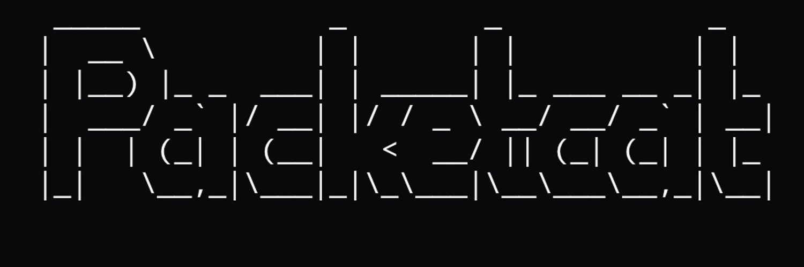

2:about
## About me

packetcat.jpg
I'm Packetcat — a technology enthusiast, aspiring cybersecurity analyst, and hands-on problem solver interested in how systems work and how to make them better.
Right now I'm building practical security skills through labs, certifications, and self-directed projects. My experience covers troubleshooting hardware and software, working in Linux environments, and exploring security tools and techniques in controlled lab settings. I like technical challenges, learning new tools, and turning complicated problems into clear answers.
Outside of security, I build things on the web — small apps, experiments, whatever I'm curious about that week. I'm especially drawn to projects where creativity and technology overlap: useful tools, interactive sites, digital content. When I'm not working with tech, I'm usually gaming, poking at new hardware, or sketching out ideas for the next project.
I'm always looking to grow, collaborate, and take on new challenges in IT and cybersecurity.
- Linux
- Kali on Raspberry Pi 5
- Hardware & software troubleshooting
- Web app pentesting
- CTFs
- Web development
